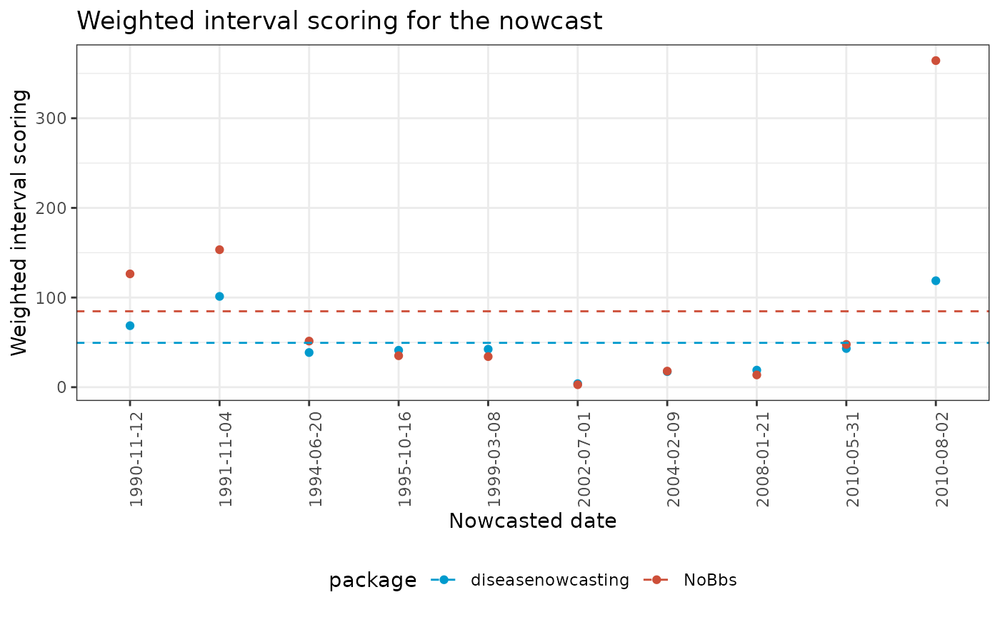

Comparison to other methods
Source:vignettes/articles/Comparison-to-other-methods.Rmd
Comparison-to-other-methods.RmdIn this article we compare our package against the results from:
- The NobBS package.
You can go to the Comparison section directly for the comparison if you wish to skip the methods for comparing.
First we will call the libraries and generate the
diseasenowcasting results.
library(diseasenowcasting, quietly = TRUE)
library(ggplot2, quietly = TRUE)
library(dplyr, quietly = TRUE)
library(lubridate, quietly = TRUE)diseasenowcasting
In this section we will generate the estimates that will be compared against the other packages. We will operate with the following baseline model:
data(denguedat)
now <- as.Date("1990-10-15")
ncast <- nowcast(denguedat, true_date = "onset_week", now = now,
report_date = "report_week", refresh = 0,
method = "sampling", iter = 1000,
seed = 27549, cores = 4, chains = 4)and use 10 different dates in the time series codified as
dates_to_test:
set.seed(645287)
dates_possible <- seq(min(denguedat$onset_week), max(denguedat$onset_week), by = "1 week")
dates_to_test <- sample(dates_possible, size = 10) |> sort()
#We will consider only periods of at most 3 years else it makes it really slow
mindate <- min(denguedat$onset_week)finally we will compute the nowcasts for those moments and save them into an object:
#To save the results in
ncast_wis_table <- NULL
#The diseasenowcasting version
for (now in dates_to_test){
#Get current date as date
now <- as.Date(now)
#Get new data
new_data <- denguedat |> filter(report_week <= now & report_week >= max(now - years(3), mindate))
#Update the model
ncast_update <- update(ncast, new_data = new_data, now = now)
#Get summary
ncast_summary <- summary(ncast_update, quantiles = c(0.025, 0.05, 0.25, 0.50, 0.75, 0.95, 0.975))
#Save summary
ncast_summary <- tibble(now = now, ncast_summary)
#Keep only last observation (nowcast)
ncast_summary <- ncast_summary |>
mutate(horizon = as.numeric(difftime(onset_week, !!now, units="weeks"))) |>
filter(horizon > -1)
#Update the table
ncast_wis_table <- rbind(ncast_wis_table, ncast_summary)
}
#Remove other columns
ncast_wis_table <- ncast_wis_table |>
select(-sd, -median, -`50%`, -Strata_unified)This is what it looks like:
ncast_wis_table
#> # A tibble: 10 × 10
#> now onset_week `2.5%` `5%` `25%` `50%` `75%` `95%` `97.5%` horizon
#> <date> <date> <dbl> <dbl> <dbl> <dbl> <dbl> <dbl> <dbl> <dbl>
#> 1 1990-11-12 1990-11-12 53 58 73 86.5 102 128 138 0
#> 2 1991-11-04 1991-11-04 81.0 87 109 125 142 171 182 0
#> 3 1994-06-20 1994-06-20 29.0 32 42 50 58 75 79.0 0
#> 4 1995-10-16 1995-10-16 28 32 46 56 69 88 95 0
#> 5 1999-03-08 1999-03-08 30 33 46 57 70 93 102 0
#> 6 2002-07-01 2002-07-01 1 2 4 7 12 19 23 0
#> 7 2004-02-09 2004-02-09 11 13 19 25 31 42 46 0
#> 8 2008-01-21 2008-01-21 9 11 22 31 42 63 71.0 0
#> 9 2010-05-31 2010-05-31 25 31.0 48.8 63 81 115 129 0
#> 10 2010-08-02 2010-08-02 73.0 85 131 171 223 313. 343. 0NobBS
library(NobBS)The usual call for the NobBS is as follows:
nbbs_cast <- NobBS(data = denguedat, units = "1 week", now = now,
onset_date = "onset_week", report_date = "report_week")Here we repeat the process of analyzing multiple dates to calculate the prediction’s accuracy:
set.seed(2507284)
nobbs_wis_table <- NULL
for (now in dates_to_test){
now <- as.Date(now)
#Get new data
new_data <- denguedat |> filter(report_week <= now & report_week >= max(now - years(3), mindate))
#Update the model calculating the quantiles at 95, 90 and 50%.
#The new Nobbs version doesn't require you to estimate three times to get quantiles
#but I am assuming the user has the CRAN version
nbbs_cast_95 <- NobBS(data = new_data, units = "1 week", now = now,
onset_date = "onset_week", report_date = "report_week",
specs = list(conf = 0.95))
nbbs_cast_90 <- NobBS(data = new_data, units = "1 week", now = now,
onset_date = "onset_week", report_date = "report_week",
specs = list(conf = 0.9))
nbbs_cast_50 <- NobBS(data = new_data, units = "1 week", now = now,
onset_date = "onset_week", report_date = "report_week",
specs = list(conf = 0.5))
#Bind all into a single table
nbbs_cast <- nbbs_cast_95[["estimates"]] |>
select(estimate, lower, upper, onset_date, n.reported) |>
rename(`97.5%` = upper, `2.5%` = lower, mean = estimate, observed = n.reported) |>
left_join(
nbbs_cast_50[["estimates"]] |>
select(lower, upper, onset_date) |>
rename(`75%` = upper, `25%` = lower), by = "onset_date"
) |>
left_join(
nbbs_cast_90[["estimates"]] |>
select(lower, upper, onset_date) |>
rename(`95%` = upper, `5%` = lower), by = "onset_date"
) |>
mutate(horizon = as.numeric(difftime(onset_date, !!now, units="weeks"))) |>
filter(horizon > -1) |>
mutate(now = !!now) |>
rename(onset_week = onset_date)
nobbs_wis_table <- rbind(nobbs_wis_table, nbbs_cast)
}This is what it looks like:
nobbs_wis_table
#> mean 2.5% 97.5% onset_week observed 25% 75% 5% 95% horizon now
#> 1 175 114.000 267 1990-11-12 16 152 203 122.00 249 0 1990-11-12
#> 2 206 141.000 293 1991-11-04 18 182 233 150.95 277 0 1991-11-04
#> 3 72 43.000 114 1994-06-20 5 61 84 47.00 107 0 1994-06-20
#> 4 51 26.975 93 1995-10-16 3 41 63 30.00 84 0 1995-10-16
#> 5 47 25.000 81 1999-03-08 1 38 57 28.00 74 0 1999-03-08
#> 6 5 1.000 14 2002-07-01 NA 3 8 1.00 12 0 2002-07-01
#> 7 28 13.000 52 2004-02-09 2 22 35 15.00 47 0 2004-02-09
#> 8 21 8.000 44 2008-01-21 NA 15 27 9.00 39 0 2008-01-21
#> 9 66 34.000 117 2010-05-31 1 53 81 38.00 108 0 2010-05-31
#> 10 477 278.000 787 2010-08-02 6 399 566 305.00 727 0 2010-08-02Comparison
model_table <- nobbs_wis_table |>
mutate(method = "NoBbs") |>
rename(`50%` = mean) |> #The point estimate for scoring utils
bind_rows(ncast_wis_table |> mutate(method = "diseasenowcasting"))We use the scoringutils library to calculate the
weighted interval scoring:
library(scoringutils, quietly = TRUE)
library(tidyr)
library(stringr)
summary_table <- model_table |>
mutate(observed = replace_na(observed, 0)) |>
pivot_longer(cols = ends_with("%"), names_to = 'quantile_level', values_to = 'predicted') |>
mutate(quantile_level = as.numeric(str_remove_all(quantile_level, "\\%"))/100) |>
as_forecast_quantile() |>
score() |>
summarise_scores(by = c("horizon","method","now"))And format for presenting
wis_table <- summary_table |>
pivot_wider(id_cols = c("horizon","now"), names_from = "method", values_from = "wis") |>
mutate(nowcat = factor(now, ordered = TRUE))Finally the results show that diseasenowcasting is
either close to NoBbs or performs better than
NoBbs:
ggplot(wis_table) +
geom_point(aes(x = nowcat, y = diseasenowcasting, color = "diseasenowcasting")) +
geom_point(aes(x = nowcat, y = NoBbs, color = "NoBbs")) +
geom_hline(aes(yintercept = mean(NoBbs), color = "NoBbs"), linetype = "dashed") +
geom_hline(aes(yintercept = mean(diseasenowcasting), color = "diseasenowcasting"), linetype = "dashed") +
theme_bw() +
labs(
x = "Nowcasted date",
y = "Weighted interval scoring",
title = "Weighted interval scoring for the nowcast"
) +
theme(
legend.position = "bottom",
axis.text.x = element_text(angle = 90, hjust = 0.5, vjust = 1)
) +
scale_color_manual("package", values = c("deepskyblue3","tomato3"))